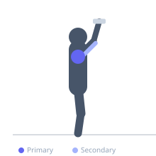

Exercise guide / Arnold Press with Midpoint Pause
Arnold Press with Midpoint Pause
The Arnold press with midpoint pause pauses for 2-3 seconds at the halfway point of the rotation — when the palms face out to the sides and the elbows are at shoulder height — before continuing the press to lockout. The midpoint pause occurs at the most demanding position in the movement, maximizing deltoid recruitment at the transition from the anterior to lateral head activation pattern and training strength specifically through that challenging mid-range.
Primary muscles
deltoid anterior
deltoid lateral
Secondary muscles
triceps brachii
Stabilizers
erector spinae
Equipment
Standard Barbell


Starting position
- Seated with dumbbells in Arnold press starting position — palms facing body, elbows forward.
Setup
- Reduce load by 20-30% compared to standard Arnold press to accommodate the mid-range pause.
Steps
- Step 1: Begin pressing and rotating the wrists outward.
- Step 2: At the midpoint — palms facing out, elbows at shoulder height — stop and hold for 2-3 seconds.
- Step 3: Hold strictly — no relaxing, no sinking.
- Step 4: Continue pressing to full lockout, completing the rotation to pronated.
- Step 5: Return under control, pausing again at the midpoint on the way down if desired.
Coaching cues
- Stop when palms face outward — that is the midpoint
- Hold it — no sinking through the pause
- Drive overhead after the hold
Breathing
- Exhale pressing to midpoint. Hold during pause. Exhale completing the press.
Range of motion
- Full range from supinated start to overhead lockout with 2-3s midpoint hold.
Tempo
- 2-3 hold-2-0
Common mistakes
- Dropping the elbows below shoulder height during the pause
- Not holding for full 2-3 seconds — the pause is the key variable
Safety
- Reduce load relative to standard Arnold press
- High demand on the shoulder joints at the midpoint — moderate loads only
Training
- hypertrophy: 6–10 reps
- hypertrophy: 3–4 sets
- Rest: {'hypertrophy': 120}